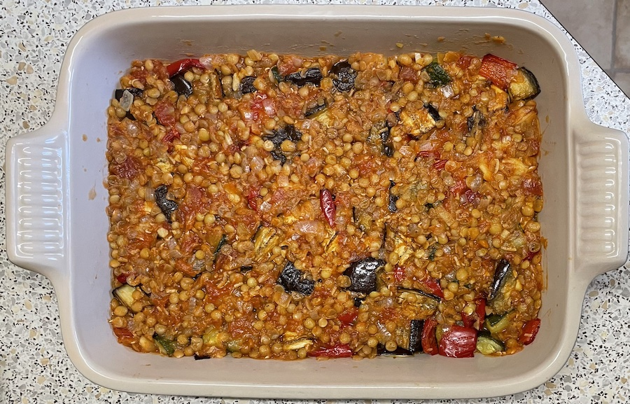
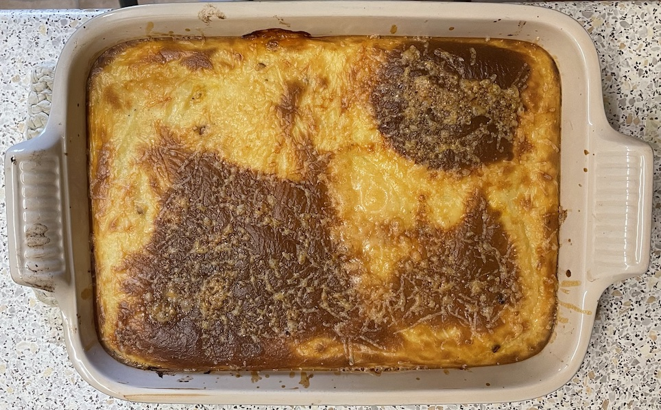
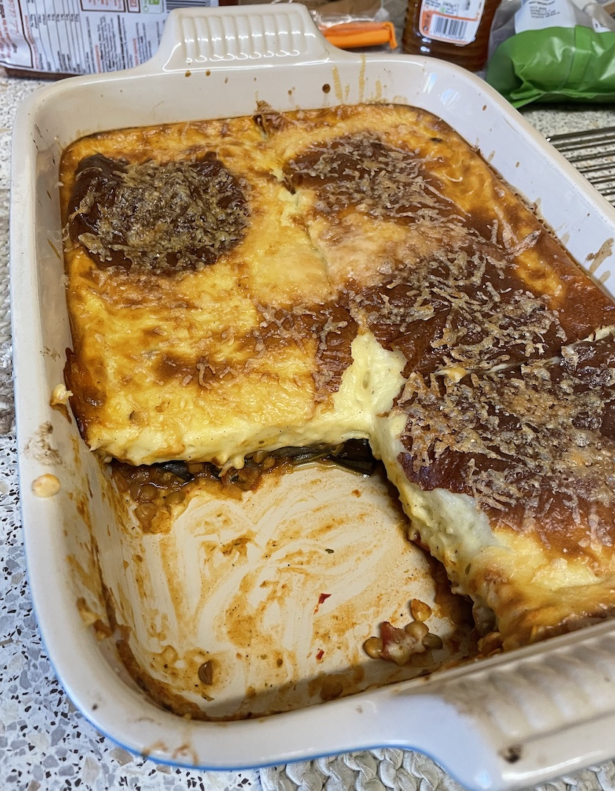

Vegetable moussaka
Vegetables
- Dice
- 2 medium aubergines
- 3 peppers
- 2 large corgettes
- 2 potatoes
- Bake in oven at 190°C for 35 mins until tender
Lentil sauce
- Fry until soft
- Add for 1 min
- 2 cloves garlic
- 2 tbsp tomato paste
- Add, bring to boil then simmer 20 mins
- 110g green lentils precooked 15 mins
- 1 tin tomatoes
- 150ml stock
- 1 tsp oregano
- ½ tsp nutmeg
- ¼ tsp cinnamon
- ½ tsp salt
Bechamel
- Warm in pan then empty into bowl
- Warm in pan
- Stir in and cook until golden
- Gradually add back then milk whisking continuously then cook for 5 mins
- Add some mixture, whisk then add back to pan
- Add
- 1 tsp nutmeg
- 25g parmesan
- Cook for 2 more mins
- Allow to cool and thicken
- Beat to stiff peaks then fold into sauce
- 2 egg whites
- ½ tsp white wine vinegar
Moussaka
- Put layer of sauce in 9"x13" dish
- Add veg
- Pour over rest of sauce
- Pour over bechamel
- Sprinkle 40g cheese / breadcrumbs on top
- Bake in oven at 190°C for 45 mins or until bechamel golden (turn halfway)
Serving
- With rice / potatoes / buckwheat
- Cool for 20 mins before serving
- 6 portions
Notes
- takes 2½ hours from start to serving
- Don't need to fully cook lentils
- Can add parmesan to bechamel or on top of moussaka
- Can add parmesan / feta between veg and bechamel
- Original
recipe
Pics



Bechamel (with olive oil)
- Warm in pan
- Stir in and cook until golden
- Gradually add, whisking continuously then cook for 6 mins
- 900ml milk warmed
- ½ tsp nutmeg
- Add some mixture, whisk then add back to pan
- Cook for 2 more mins
- Allow to cool and thicken